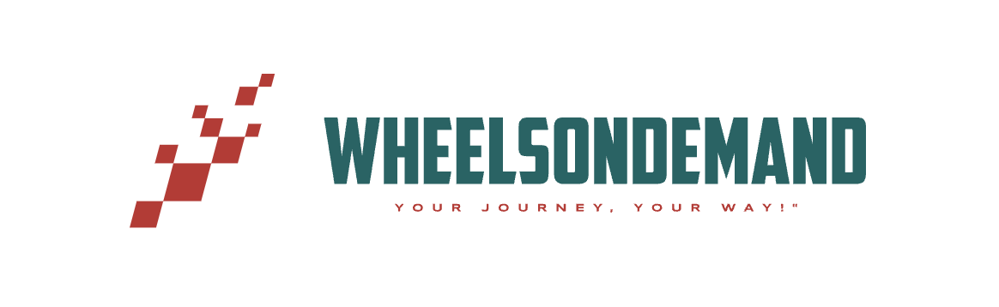

<mat-sidenav-container class="sidenav-container">
  <mat-sidenav #drawer class="sidenav" fixedInViewport [attr.role]="(isHandset$ | async) ? 'dialog' : 'navigation'"
    [mode]="(isHandset$ | async) ? 'over' : 'side'" [opened]="(isHandset$ | async) === false">
    <mat-toolbar></mat-toolbar>
    <mat-nav-list>
      <a mat-list-item [routerLink]="['dashboard']">
        <mat-icon class="mat-icon-sm">dashboard</mat-icon>
        Dashboard
      </a>
      <a mat-list-item [routerLink]="['userlist']">
        <mat-icon class="mat-icon-sm">person</mat-icon>
        Users
      </a>
      <a mat-list-item [routerLink]="['hostlist']">
        <mat-icon class="mat-icon-sm">business</mat-icon>
        Partners
      </a>
      <a mat-list-item [routerLink]="['vehicles']">
        <mat-icon class="mat-icon-sm">directions_car</mat-icon>
        Vehicles
      </a>
      <a mat-list-item (click)="logout()">
        <mat-icon class="mat-icon-sm">logout</mat-icon>
        Logout
      </a>
    </mat-nav-list>
  </mat-sidenav>
  <mat-sidenav-content>
    <mat-toolbar color="primary">
      <button type="button" aria-label="Toggle sidenav" mat-icon-button (click)="drawer.toggle()"
        *ngIf="isHandset$ | async">
        <mat-icon aria-label="Side nav toggle icon">menu</mat-icon>
      </button>
      <h2>Admin</h2><span></span>
    </mat-toolbar>
    <router-outlet></router-outlet>
  </mat-sidenav-content>
</mat-sidenav-container>